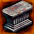
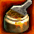
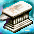
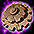
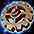
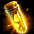
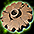

宿命OP（NPCOP）の仕様・付与可能部位
NPC名を冠した特別なオプション「宿命OP（NPCOP）」の効果・付与枠・装備部位・制約と、増幅・再構成の仕様について紹介します。
NPCOP一覧：何OP目・どの部位に付くか
付与枠は装備に並ぶ1～3番目のOP位置です。お守りで付与すると、指定枠の既存OPを上書きします。部位欄は付与可能部位一覧の対象です。
ステータス固定値
| NPCOP名 | 効果 | 付与枠 | 主武器 | 防具・補助武器 |
|---|---|---|---|---|
| ジェーソン | 力 +250 | ①②③ | 片手剣、槍、牙、メイス、ナックル、クロー、ダークコア、錬金石、大砲 | 補助首頭背・耳腰手袋体足指グローブ |
| セリー | 敏捷 +250 | ①②③ | 槍、弓、ダガー、ナックル、スリング、銃 | 補助首頭背・耳腰腕輪体足指ブレスレット |
| トゥンガ | 健康 +250 | ①②③ | 弓、牙、メイス、スリング、ダークコア、銃、錬金石 | 補助首頭背・耳腰手体足指ベルト |
| マファス | 知恵 +250 | ①②③ | 翼、笛、ステッキ、鞭、双剣、ほうき | 補助首頭背・耳腰手体足指ネックレス |
| ティレン | 知識 +250 | ①②③ | 杖、翼、笛、ステッキ、本、大砲 | 補助首冠背・耳腰手体足指冠 |
| ジム・モリ | カリスマ +250 | ①②③ | 杖、翼、ステッキ、鞭、本、双剣、ほうき、ダークコア、錬金石 | 補助首冠背・耳腰手体足指冠 |
| ハーソン | 運 +250 | ①②③ | 爪（武道家） | 補助首兜・冠背・耳腰手・腕体爪指槍投擲機、ヘルメット、冠、ネックレス、グローブ、ブレスレット |
ステータス比率
| NPCOP名 | 効果 | 付与枠 | 主武器 | 防具・補助武器 |
|---|---|---|---|---|
| ガイルート | 力 +2 /レベル 3 | ①②③ | 全24種、爪（武道家） | 補助首頭背・耳腰手袋体爪指グローブ |
| バルラレル | 敏捷 +2 /レベル 3 | ①②③ | 全24種、爪（武道家） | 補助首頭背・耳腰手体靴・爪指シューズ |
| ロシペル | 健康 +2 /レベル 3 | ①②③ | 全24種、爪（武道家） | 補助首頭背・耳腰手体爪指ベルト |
| テマヌエル | 知恵 +2 /レベル 3 | ①②③ | 全24種 | 補助首頭背・耳腰腕輪体足指ブレスレット |
| オニトルロ | 知識 +2 /レベル 3 | ①②③ | 全24種 | 補助首冠背・耳腰手体足指冠 |
| タニア | カリスマ +2 /レベル 3 | ①②③ | 全24種 | 補助首頭背・耳腰手体足指ネックレス |
| ランディス | 運 +2 /レベル 3 | ①②③ | 全24種、爪（武道家） | 補助首冠背・耳腰手・腕体靴・爪指冠、ネックレス、ベルト、グローブ、ブレスレット、シューズ |
その他の効果
| NPCOP名 | 効果 | 付与枠 | 主武器 | 防具・補助武器 |
|---|---|---|---|---|
| サナ | ダメージ +300 % | ①②③ | 全24種 | 補助首頭背・耳腰手体足指— |
| シュルト | 防御力 +300 % | ①②③ | — | 補助首頭背・耳腰手共通鎧足指共通鎧 |
| タポ | 最大HP +200 % | ①②③ | — | 補助首頭背・耳腰手共通鎧足指ネックレス、共通鎧 |
| ケイルン | 最大CP +200 % | ①②③ | — | 補助首冠背・耳腰手専用鎧足指冠、専用鎧 |
| バイル | 命中率 +20 % | ①②③ | 片手剣、弓、杖、牙、笛、ダガー、ナックル、スリング、ステッキ、鞭、クロー、本、双剣、ほうき、ダークコア、銃、錬金石、大砲 | 補助首頭背・耳腰手体足指— |
| アリエル | 回避率 +20 % | ①②③ | — | 補助首頭背・耳腰手専用鎧足指専用鎧 |
| オベ | 致命打発動確率 +25 % | ①②③ | 片手剣、両手剣、槍、杖、牙、メイス、ナックル、ステッキ、鎌、クロー、本、ダークコア、錬金石、アンカー、大砲 | 補助首頭背・耳腰投擲機体足指槍投擲機 |
| ニケ | 移動速度 +50 % | ①②③ | — | 補助首頭背・耳腰手体靴指シューズ |
| ペル | 攻撃速度 +65 % | ①②③ | 片手剣、両手剣、槍、杖、牙、メイス、ナックル、ステッキ、鎌、クロー、本、ダークコア、錬金石、アンカー、大砲 | 補助首頭背・耳腰投擲機体足指槍投擲機 |
| ソラ | 魔法抵抗 +60 % | ①②③ | — | 補助首頭背・耳腰手専用鎧足指盾、獣毛装飾、契約霊、ウォーペイント、宝石、専用鎧 |
| リラ | 状態異常抵抗 +80 % | ①②③ | 全24種、爪（武道家） | 補助首兜・冠背・耳腰手・腕共・専靴・爪指盾、槍投擲機、腕刺青、ブローチ、獣毛装飾、十字架、肩刺青、星群、契約霊、ウォーペイント、コサージュ、触媒石、宝石、ヘルメット、冠、イヤリング、マント、ネックレス、ベルト、グローブ、ブレスレット、共通鎧、専用鎧、シューズ、指輪 |
| ガスピル | スキルレベル +8 | ①②③ | — | 補助首頭背・耳腰手専用鎧足指ネックレス、専用鎧 |
| ロングッシュ | 魔法アイテムドロップ確率 +40 % | ①②③ | ダガー、爪（武道家） | 補助首兜・冠背・耳腰手・腕共通鎧靴・爪指槍投擲機、ヘルメット、冠、イヤリング、マント、ネックレス、ベルト、グローブ、ブレスレット、共通鎧、シューズ |
| ジョン・マルコ | ユニークアイテムドロップ確率 +30 % | ①②③ | ダガー、爪（武道家）、スリング、ステッキ | 補助首兜・冠背・耳腰手・腕共通鎧靴・爪指槍投擲機、ヘルメット、冠、イヤリング、マント、ネックレス、ベルト、グローブ、ブレスレット、共通鎧、シューズ |
| ネルバ | 魔法ダメージを 70 ％ 強化させる。 | ①②③ | 全24種 | 補助首頭背・耳腰手体足指— |
| ホーク | 物理致命打ダメージ 40 ％ 増加 | ①②③ | 全24種 | 補助首頭背・耳腰手袋体足指グローブ |
| エステル | フィールドのステータス低下に対する抵抗 15 ％ 増加 | ①②③ | — | 補助首兜・冠背・耳腰手体靴指ヘルメット、冠、シューズ |
| ベリータ | フィールドの属性最大値制限に対する抵抗 15 ％ 増加 | ①②③ | — | 補助首兜・冠背・耳腰手体靴指ヘルメット、冠、シューズ |
主武器の「全24種」：片手剣、両手剣、槍、弓、杖、牙、メイス、翼、笛、ダガー、ナックル、スリング、ステッキ、鞭、鎌、クロー、本、双剣、ほうき、ダークコア、銃、錬金石、アンカー、大砲。
鎧は共通鎧と専用鎧を区別しています。武道家の爪・ナックルと闘士のクローも別の装備種です。
付与方法とNPCOPの制約
| 項目 | 仕様 |
|---|---|
| 入手 | 精鋭討伐・ロトボックスなど。宿命のOP魔法のお守り箱からNPCOPのお守りを入手 |
| お守りの成功率 | 宿命のOP魔法のお守り箱から出るお守りは100% |
| 付与する位置 | NPCOPごとに指定。3OP目など後ろの枠へ付ける際は、手前の1・2OP目が必要になる場合があります |
| 同名OPの複数付与 | 可能。2か所に付与できるOPを追加する場合は、もう一方の対象枠を空けてから付与 |
| 要求レベル上昇 | NPCOP分は+0 |
| 削除 | 消滅の魔法書などによるNPCOPの選択削除は不可。付加OPを全て消す方法 |
| 複製・抽出 | 鏡の魔法書・神秘鏡・魔力抽出は使用不可 |
| OP増強 | 通常のNPCOPは黄金の人形などによるOP増強の対象外 |
| 装備の再構成・通常異次元 | 2022年11月9日からNPCOP付き装備にも使用可能 |
| 取引・銀行 | NPCOP付き装備は基本的に取引・銀行保管が可能。お守り自体の取引可否はアイテムごとの制限に従います |
例：[ランディス][運比][運比]に2つ目の[ランディス]を付ける場合は、3OP目の[運比]を削除して対象枠を空けます。既に付いているNPCOPを選んで削除することはできません。
付与と制約の詳細：NPCオプション利用時の注意点
不要になったNPCOPを消す方法
地獄の鉄床・超強力ボンドは、壊れた装備の付加OPを全て消して修理します。この修理効果を使えば、NPCOPも含めて全消去できると考えられます。
NPCOP以外の付加OPも全て消えます。ユニーク指輪はエンチャント失敗で装備自体が消滅するため、この手順には使わないでください。
| 修理アイテム | 対象の装備 | 付加OP |
|---|---|---|
 地獄の鉄床 |
ユニーク系 | 全て消える |
 超強力ボンド |
ユニーク以外 | 全て消える |
 天上の鉄床 |
ユニーク系 | 保持する |
| 魔法のボンド | ユニーク以外 | 保持する |
- エンチャント可能な装備に通常のエンチャントを行い、失敗による「壊れた状態」にします。増幅の破壊判定などで既に壊れている場合は、次へ進めます。
- ユニーク系は地獄の鉄床、それ以外は超強力ボンドで修理します。
- 付加OPが全て消えたことを確認し、新しいOPを付け直します。
「普通のボンド」で全消去に使うのは超強力ボンドです。魔法のボンドと天上の鉄床は、OPを残して修理するときに使います。
宿命OPの強化・再構成
2026年10月22日のアップデート（ver0.0896）で実装されました。「栄誉の祭典」の「演舞場」にいるNPC「マグニス」で、対象の宿命OPが付いた装備を増幅できます。
| 対象 | 増幅前の効果 | 最大段階 | 増幅後に選ばれる能力値 |
|---|---|---|---|
| 能力値数値増加 | 力・健康・敏捷・知識・知恵・カリスマ・運の固定値増加 | 7 | 力・健康・敏捷・知識・知恵・カリスマ・運 |
| レベル比例能力値増加 | 力・健康・敏捷・知識・知恵・カリスマ・運のレベル比例増加 | 7 | 力・健康・敏捷・知識・知恵・カリスマ・運 |
元のNPCOPから初めて増幅に成功すると、上がるステータスがランダムで決まります。例えばジェーソン（力+250）から、ケルベロス（知識+500）になることがあります。以降の増幅ではステータスの種類は変わらず、数値のみ上がります。レベル比例の効果はLv2000を上限として計算されます。
増幅後のオプション名・効果
| 段階 | 固定値のオプション名 | 固定値 | 段階 | 比率のオプション名 | 比率 |
|---|---|---|---|---|---|
| 1 | ケルベロス | +500 | — | — | — |
| 2 | ドラゴート | +700 | — | — | — |
| 3 | 骸骨王 | +1000 | — | — | — |
| 4 | ハシュラム | +1250 | 4 | 神々しい太陽 | +3 / レベル4 |
| 5 | タビアクート | +1500 | 5 | かき回す神龍 | +5 / レベル6 |
| 6 | スザルアンギール | +1750 | 6 | 深い静寂 | +11 / レベル12 |
| 7 | シュミット | +2000 | 7 | 偉大な者 | +1 / レベル1 |
増幅・強化増幅の違いと結果
| 方法・結果 | 仕様 |
|---|---|
| 増幅 | 金のインゴットを使用 |
| 強化増幅 | 金のインゴットと宿命のオプションのお守りを使用。通常の増幅より成功率が高い |
| 失敗 | 装備は破壊されず、既存の段階を維持 |
| 破壊 | 装備が「壊れた」状態になる。既存の段階は維持され、鉄床・ボンドで修理可能 |
固定値：1～7段階の確率・必要素材
| 到達 段階 |
増幅 | 強化増幅 | |||||||
|---|---|---|---|---|---|---|---|---|---|
| 成功 | 失敗 | 破壊 | 金の インゴット |
成功 | 失敗 | 破壊 | 金の インゴット |
宿命の お守り |
|
| 1 | 50% | 50% | 0% | 5個 | 100% | 0% | 0% | 5個 | 1個 |
| 2 | 45% | 45% | 10% | 5個 | 90% | 10% | 0% | 5個 | 1個 |
| 3 | 40% | 40% | 20% | 5個 | 80% | 15% | 5% | 5個 | 1個 |
| 4 | 25% | 55% | 20% | 10個 | 50% | 35% | 15% | 10個 | 3個 |
| 5 | 15% | 50% | 35% | 10個 | 30% | 50% | 20% | 10個 | 3個 |
| 6 | 10% | 40% | 50% | 15個 | 20% | 55% | 25% | 15個 | 5個 |
| 7 | 5% | 30% | 65% | 30個 | 10% | 60% | 30% | 30個 | 10個 |
比率：4～7段階の確率・必要素材
| 到達 段階 |
増幅 | 強化増幅 | |||||||
|---|---|---|---|---|---|---|---|---|---|
| 成功 | 失敗 | 破壊 | 金の インゴット |
成功 | 失敗 | 破壊 | 金の インゴット |
宿命の お守り |
|
| 4 | 25% | 55% | 20% | 10個 | 50% | 35% | 15% | 10個 | 3個 |
| 5 | 15% | 50% | 35% | 10個 | 30% | 50% | 20% | 10個 | 3個 |
| 6 | 10% | 40% | 50% | 15個 | 20% | 55% | 25% | 15個 | 5個 |
| 7 | 5% | 30% | 65% | 30個 | 10% | 60% | 30% | 30個 | 10個 |
再構成
固定値OPは3段階目（骸骨王）以降、再構成できません。2段階目までに希望するステータスへ再構成してから増幅してください。
再構成では、金のインゴットを使って上がるステータスの種類をランダムに変更します。例えば、ケルベロス（力+500）からケルベロス（知識+500）になることがあります。変更先は指定できません。
増幅済みステータスOPに各種ステータス増強OPが適用されない問題は、2026年10月23日（ver0.0897）に修正されました。
関連：日本版のアップデート履歴
玲瓏な異次元ボックスとNPCOP
| 項目 | 仕様 |
|---|---|
| 合成する箇所 | 1～3OP目から、混ぜたいOP位置を選択 |
| 残りのOP | 選択していない2枠は、合成後に残る装備側のOPを維持 |
| 装備ベース | 装備も合成対象。目的の装備が必ず残る方式ではありません |
| 破壊リスク | 装備が完全に破壊される場合があります。増幅の「壊れた状態」とは別のリスクです |
| 対象等級 | ULT等級以外にも使用可能 |
| 入手 | メインクエスト1のNPC「バイル」で交換。性向値-100のキャラクターが、20億Goldまたは金のインゴット20本で交換できます。交換後の性向値は0 |
| NPCOP付き装備の合成 | 「魔法細工ギア［高レベル］」を使うと、宿命OPの付いた装備にも使用可能。両方の装備にNPCOPが付いていても使用可能 |
| 補助剤の枠数 | 1回に登録できる補助剤は1個 |
魔法細工ギア
| 補助剤 | 効果 |
|---|---|
 魔法細工ギア［高レベル］ |
NPCOP付き装備を対象にできる。装備破壊の可能性あり |
 魔法細工ギア［保護］ |
装備の完全破壊を防ぐ |
 魔法細工ギア［装備選択］ |
左側に登録した装備をベースにする。装備破壊の可能性あり |
 魔法細工ギア［OP選択］ |
移動するOPを選択。装備破壊の可能性あり |
詳細：玲瓏な異次元ボックス
実際の装備強化
力＋を2部位に付ける例
例えば、グローブとネックレスに力＋を付けるなら、次の組み合わせがあります。ネックレスは元が知恵上昇のマファスでも、増幅・再構成で力上昇にできます。
| 付ける部位 | 元のNPCOP | 元の効果 | 付与枠 | 力に再構成して6段階まで増幅 |
|---|---|---|---|---|
| グローブ | ジェーソン | 力 +250 | ①②③ | スザルアンギール（力+1750） |
| ネックレス | マファス | 知恵 +250 | ①②③ | スザルアンギール（力+1750） |
- グローブの1OP目にジェーソン、ネックレスの2OP目にマファスを付与します。指定枠の既存OPは上書きされるので、残すOPの位置を先に決めます。
- NPC「マグニス」で、それぞれ初回の増幅を行います。
- 力以外になった場合は、1～2段階目のうちに再構成を繰り返し、力上昇にします。
- 力になったことを確認してから、6段階の+1750まで増幅します。2部位で力+3500、両方を7段階の+2000まで上げると合計+4000です。
力比率と力＋が逆転するレベル
通常の力比率1/2は「Lv÷2（端数切り捨て）」、宿命OPの最終比率は「Lvごとに+1、Lv2000まで」です。1OP分の増加量を、ステータス増強の補正を加えずに比べます。
| 比較する力比率 | 比較する固定値 | 同じ増加量になるLv | 比率の方が上回るLv |
|---|---|---|---|
| 通常の力比率1/2 | 力+1750（6段階） | 3500～3501 | 3502から |
| 通常の力比率1/2 | 力+2000（7段階） | 4000～4001 | 4002から |
| 偉大な者（力+1/レベル1） | 力+1750（6段階） | 1750 | 1751から |
| 偉大な者（力+1/レベル1） | 力+2000（7段階） | 2000以上 | 上回らず、Lv2000以降は同じ |
Lv2000の例では、通常の力比率1/2は+1000、固定値6段階は+1750、固定値7段階と宿命の最終比率はどちらも+2000です。例えば通常の力比率1/2を、上の例の力+1750へ1つ交換すると、力は+750増えます。
6段階から7段階に上げる費用の計算例
力+1750から+2000へ、あと+250を狙う例です。単価の例として、修理1回をインゴット60本、お守り1個を5本と仮定します。すでに6段階になっている装備を使い、7段階に成功するまでの平均費用を比較します。
| 方法 | 平均試行回数 | 増幅のインゴット | お守り代 | OPを残す修理代 | 平均合計 |
|---|---|---|---|---|---|
| 通常の増幅 | 20回 | 30本×20回 ＝600本 |
0本 | 13回×60本 ＝780本 |
1380本 |
| 強化増幅 | 10回 | 30本×10回 ＝300本 |
10個×10回×5本 ＝500本 |
3回×60本 ＝180本 |
980本 |
この単価なら強化増幅の方が平均400本少なくなります。修理代60本の条件では、お守り1個9本で両者が同額になり、9本を超えると通常の増幅の方が安くなります。実際の回数・費用は前後します。
増幅画面内で修理を続ける手順
- ユニーク系なら天上の鉄床、それ以外なら魔法のボンドを用意します。
- 増幅で装備が壊れたら、増幅画面を開いたまま、登録されている装備を修理アイテムで修理します。
- 壊れた状態が解除され、OPと段階が残っていることを確認します。
- 同じ装備・OP枠で増幅を再開します。